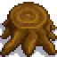

Large Stump
Jump to navigation
Jump to search
| Large Stump | |
 |
|
| Information | |
| Source | The Farm • Secret Woods • The Mines (Shrine ON) |
| Season | |
Large Stumps are the remains of long-dead trees that are found on the Farm, the Secret Woods and the Mines. A Copper Axe (or better quality) is required to remove a large stump, yielding 2 Hardwood and 25 Foraging Experience points. Players with the Forester profession have a 50% chance of receiving one extra piece of hardwood. Stumps also have a 10% chance of dropping Mahogany Seeds.
Certain large stumps will respawn daily, providing a renewable source for hardwood:
- All six large stumps in the Secret Woods respawn.
- On the Forest Farm, there are eight large stumps at the west side that respawn. On the Four Corners Farm, there is one large stump in the top left quadrant of the map that respawns.
- Large stumps in the Mines (floors 41-69 with the Shrine of Challenge activated) can be found.
All other large stumps on the Farm disappear permanently after being removed.
Trivia
- Destroying a large stump takes:
- 7 hits with a Copper Axe
- 5 hits with a Steel Axe
- 4 hits with a Gold Axe
- 3 hits with an Iridium Axe
- 2 hits with a Powerful Iridium Axe
History
- 1.5: Added chance of dropping Mahogany Seeds.
| Trees | |
|---|---|
| Trees | Green Rain Trees • Mahogany Tree • Maple Tree • Mushroom Tree • Mystic Tree • Oak Tree • Palm Tree • Pine Tree |
| Fruit Trees | Apple Tree • Apricot Tree • Banana Tree • Cherry Tree • Mango Tree • Orange Tree • Peach Tree • Pomegranate Tree |
| Seeds | Acorn • Mahogany Seed • Maple Seed • Mossy Seed • Mushroom Tree Seed • Pine Cone • Mystic Tree Seed |
| Fruit | Apple • Apricot • Banana • Cherry • Mango • Orange • Peach • Pomegranate |
| Misc | Large Log • Large Stump • Tea Bush |